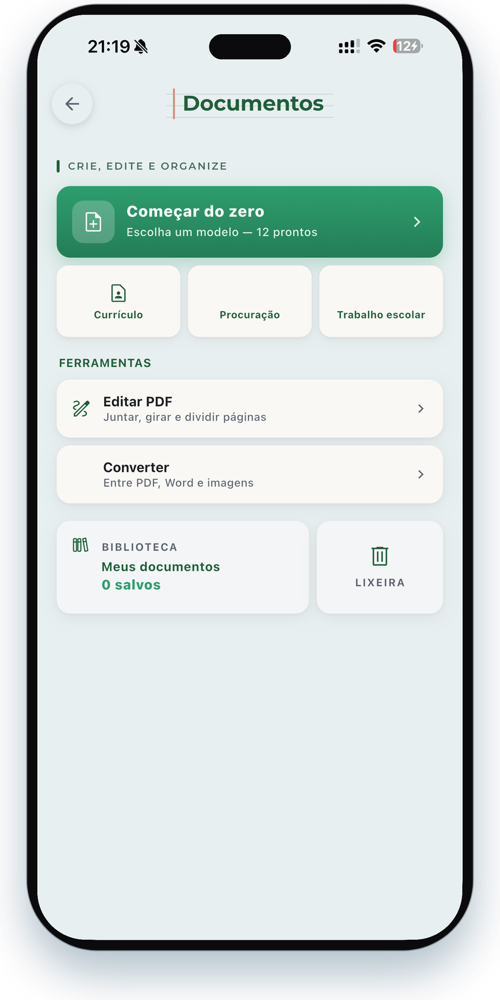
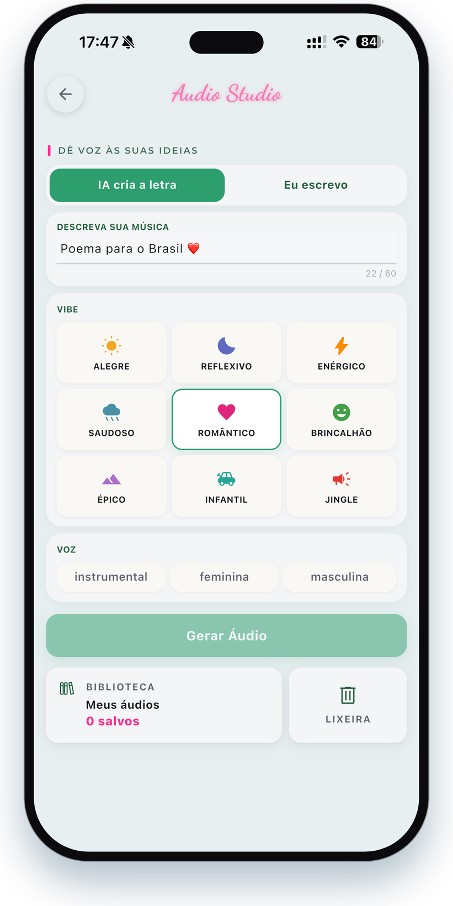
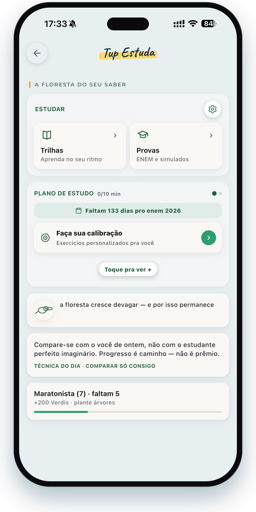

As habilidades
do Tupham.
Conversa, documentos, esportes, criação e estudos, com um modelo de IA criado por brasileiros. Aqui está cada coisa que o Tupham faz, organizada por área.


Um chat que entende
o jeito brasileiro.
O coração do Tupham: você pergunta do seu jeito, com gíria, sotaque e tudo, e ele responde como um amigo que manja de tudo. Tira dúvidas, faz contas, escreve textos e dá ideias, sempre no seu jeito.
Pra que serve

Toda a papelada,
pronta no celular.
Criar, editar e converter documentos direto no aparelho, em PDF e Word, sem marca-d'água, e sem mandar nada pra nuvem.
- Currículo: assistente inteligente, diversos layouts.
- Modelos prontos: contrato, recibo, procuração, declaração e mais.
- Editar PDF: reorganizar, girar, dividir, apagar e adicionar páginas.
- Converter: Word → PDF, PDF → Word editável e várias imagens num PDF.
- Privacidade & biblioteca: nada do conteúdo vai pra nuvem; seus arquivos ficam guardados no seu celular.

Seu time ao vivo,
e o bolão com a turma.
Os jogos ao vivo, lance a lance, com alerta de gol no bolso. E a tradição do bolão integra toda a experiência.
- Ao vivoPlacar, gols, cartões, posse e chutes em tempo real, com notificações que te deixam sempre antenado.
- Seus campeonatosBrasileirão, Libertadores, Copa do Mundo e mais, com próximos jogos, resultados e tabela.
- ClassificaçãoA tabela inteira com as zonas coloridas, V / E / D, pontos e saldo.
- Raio-X + Palpite da TorcidaOs números da temporada do time e a votação ao vivo da galera.
- Bolões com a turmaComeça na Copa do Mundo 2026 e, em breve, todos os campeonatos. Crie o seu, convide por link e dispute o ranking ao vivo.


Música cantada e artes
prontas pra postar.
Descreva a ideia e o Tupham tira do papel: uma música completa com voz cantada em português, ou uma arte pronta pra publicar.
- Áudio StudioTítulo, letra, melodia, arranjo e voz cantada com vários estilos.
- Modo DesignConvite, cartão de visita, panfleto, frase e banner de LinkedIn. Gere criativos para diversos propósitos.
Um jeito de estudar
que muda com você.
Pro seu objetivo (ENEM, vestibular ou concurso), o Tupham monta um plano diário e recalcula todo dia. E pra aprender qualquer assunto no seu ritmo, tem as trilhas, que funcionam até offline.
- Plano diárioAté 3 passos por dia, recalculados pra mirar a sua maior dificuldade.
- Trilhas de aprendizadoCaminhos prontos pra estudar diversas áreas no seu ritmo, e que rodam até offline.
- Revisão na hora certaFlashcards que voltam quando você precisa fixar.
- Questões no estilo da provaBlocos pra treinar de verdade e medir o seu avanço.
- Pesquisa com fontesQuando precisa ir fundo num tema, o Tupham monta um dossiê com as fontes pra você conferir.

 A diferença que ninguém tem
A diferença que ninguém tem
A IA que funciona
com e sem internet.
Sem internet, o Tupham resolve cálculos, definições, traduções e conceitos direto no seu celular. Com internet, faz pesquisas e traz clima, cotações e notícias na hora.
sem internet
Tudo isso
num app só.
A IA do Brasil no seu bolso: faz tudo, em português, e cada uso ainda ajuda o planeta. Grátis e ilimitado.